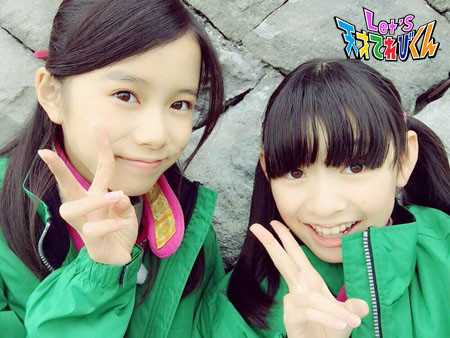

<<2015年10月 | トップページ | 2015年12月>>
2015年11月
季節を感じる瞬間［瀧澤翼］
こんにちは～！瀧澤翼です。
最近、すっかり寒くなっちゃいましたね～。
さぁ、今回のテーマは「 季節を感じる瞬間 」ですね。
最近寒くなってきて、登校するときに手袋をし始めました。
と、いうわけで僕の季節を感じる瞬間は、服装を変えたときです。
学校の制服でYシャツが長袖から半袖に変わったときに
「あ、夏が来たな～」と思います。
逆にYシャツが半袖から長袖に変わり、学ランを着るようになると
「あ、これから寒くなるんだなぁ～」と思います。
僕は他にも季節を感じる瞬間があります。
例えば街の風景を見て、落ち葉や枝などが落ちているのを見ると秋を感じます。
あと、新品のランドセルを背負って
元気いっぱいに登校している１年生を見ると春を感じます。
季節を感じる瞬間ってふとしたときに気づきますよね。
それにしても、来年はもう2016年かぁ～。
僕は未年（ひつじどし）で今年が年男なんですが
１ヶ月くらいでもう終わっちゃいます。
１年って早く感じますね。
春夏秋冬を１つずつしっかり過ごしたいです。
Let’s season！！！！
投稿者:瀧澤翼 | 投稿時間:18時45分 | カテゴリ：てれび戦士 | 固定リンク
季節を感じる瞬間［齋藤茉日］
こんにちわ～
茉日です ( ´ ▽ ` )ﾉ
今回のテーマは「 季節を感じる瞬間 」です (*^^*)
そ～ですね～。。。
私は季節ごとに違いますね！
＊春＊
学校でクラスが変わって、クラスで仲良くなってきたな～
楽しいな～♪
と思い始めるころがちょうど春です (*^^*)
＊夏＊
私はこの頃になると
「 友だちとプールに行きた～い 」
と思うようになります (*^^*)
なので、そう思った頃が夏だな～と感じます ^ - ^
あとは、洋服屋さんにサンダルが売っていたりすると夏を感じます( ´ ▽ ` )ﾉ
セミの音もしてくるようになりますよね～～
＊秋＊
夏から秋に変わるときは、日が暮れるのが急に早くなる気がします・・・
あとは、空が切ない色になります ^ - ^
そうなると、
飽きだな～ じゃなくって
開きだな～ じゃなくって
秋だな～
↑ようやくたどり着きました笑
って感じるようになります！
そしてそして、
＊冬＊
もちろん、これは
「 寒ッッッッ 」
って感じたときですよね笑笑
あとは、コンビニにチョコのものが増えたときに
冬を感じます～～ ( ´ ▽ ` )ﾉ
(*^^*)
こんな感じですね！
今の季節は冬♪
もうそろそろクリスマス、ですね！
今、季節を楽しみましょう ( ´ ▽ ` )ﾉ
それでは、今回はこの辺で

投稿者:齋藤茉日 | 投稿時間:18時45分 | カテゴリ：てれび戦士 | 固定リンク
季節を感じる瞬間［辻村晃佑］
どうも辻村晃佑です！ (*´∀`)♪
ははっ、テストが終わったのでテンションがたかいよ！
もう２学期はテストがないよ！
オレ、チョウ、ウレシイ
カタコトニ、ナルホド、ウレシイ (゜▽゜*)
話は変わりますけど、最近、暇なときはだいたい料理してます。
チャーハンが簡単だから、よくアレンジして作ってますね！
さて本題です！( ´_ゝ`)
「 季節を感じる瞬間 」かー
ぼくの場合は、外にでてはじめて吸う空気で季節を感じます。
ポカポカの甘い空気だったら春、雨っぽい空気だったら夏、
ちょっと息がつまるようなのが秋、つーんとするのが冬です。
ちなみに僕が好きな季節は秋です。( ・∇・)
なんといっても学校のイベントが多くて楽しいし、
なんといっても僕が好きなくだものがたくさんあるからです、
梨にぶどうに柿の、３大 秋のくだものです ( ・ε・)
みなさんも、自分が季節を感じる瞬間はありますか？ (´・ω・`)
以上、辻村晃佑でしたー
またね (*^ー^)ノ♪
投稿者:辻村晃佑 | 投稿時間:18時54分 | カテゴリ：てれび戦士 | 固定リンク
季節を感じる瞬間［赤崎月香］
こんにちは ヽ(^▽^@)ノ
赤崎月香です。
学校で職場体験に行きました。
働くって、楽しい！！！！！Ｏ(≧▽≦)Ｏ♪
でも毎日お仕事して、お金を稼ぐって、
大変なんだなぁって思いました。
だから、お父さんに
「 お仕事お疲れ様 」って、
優しくしてあげようと思います (*￣0￣*)ノ
☆。・:*:・°★,。・:*:・°☆
『 季節を感じる瞬間 』
いっぱいありますよ (ノ´▽｀)ノ
ぽかぽか陽気で桜が咲いたり、
梅雨が明けて、セミが鳴いたり、
学校のキンモクセイがいい香りだったり、
朝の通学中に吐く息が白くなったり、
最近だと、お家でお鍋をしました♪
このお鍋が食卓に出て、
家族であったかいお鍋をほふほふしながら食べると、
寒くなるんだなぁ～って、季節を感じます。
紅葉の季節ですね・:*:・(￣∀￣ )。・:*:・
もみじ狩りは、
りんご狩りや梨狩りみたいに
もみじを食べちゃうのかと思っていました！！！
違うんだな Σ(゜∇゜|||)
またね～ ヾ(*'-'*)
投稿者:赤崎月香 | 投稿時間:18時45分 | カテゴリ：てれび戦士 | 固定リンク
季節を感じる瞬間［小澤竜心］
こんにちは！竜心です。
ぼくが、『 季節を感じる瞬間 』は、
【 夕方のチャイムの時間が変わったとき！ 】です。
ぼくが住んでいるところは、
春と夏は、５時に鳴るのに、
10月からは、４時半に鳴ります。
外で遊んでて急に鳴るから、
『 早っ！！ (゜ロ゜ノ)ノ 』・・・と、びっくりするし、
遊ぶ時間が少なくて、もう終わりかぁ。。。
と、せつない気持ちになります (T.T)・・・・・・。
でも、感謝したいことがあります。
それは、冬にかけて、
だんだん日が出ている時間が短くなるので、
チャイムは、ぼく達の安全を考えてくれてるんだな、
と思います (ノ´∀｀*)
というわけで、
４時半のチャイムが鳴ると、季節を感じます。
11月に、少林寺拳法の全国大会で、京都に行きました。
発表の演武だけでしたが、
ぼくとしては満足の、親子演武ができました。
そして、京都の秋を見ることができました。
ぼくの【 少林寺拳法の秋 】は終わったけど、
また来年に向かって、
一生けん命、がんばります o(*⌒―⌒*)o
投稿者:小澤竜心 | 投稿時間:18時45分 | カテゴリ：てれび戦士 | 固定リンク
私の元気の秘けつ！［桐畑カレン］
こんにちは。
カレンです (*^^*)
最近うれしいことがありました♪
ジャジャーン！！！
自転車に乗れる秋！になりました ((o(^∇^)o))
お家で練習しているときは、
足でバランスをとるところまではできたんですが、
どうしてもこわくてペダルをこぎ出すことができなかったんです (;o;)
だから、自転車の乗りかた教室に行ってみたんです。
そこで練習してみたら・・・
なんと！ある瞬間、す～っと乗れるように！
本当にある瞬間！！
どうして乗れたのか？？
だけど、乗れるようになりました (*^-^*)
まだまだフラフラしてしまうから、
しばらくはサイクリングコースで練習しながら楽しみたいです♪
さて今回のお題は「 私の元気の秘けつ！ 」ですね。
「 病（ やまい ）は気から 」という言葉があるけれど、
本当にそのとおりだなあと思っています。
「 あー、いやだよー。つらいよー。 」
と思っていると、どんどんしんどくなるし、
「 わーい。なんか分かんないけど楽しいー！ 」
と思っていると、楽しく元気にすごせる気がするからです。
だから私の元気の秘けつは、
☆ プラスしこう ☆
かな (*^-^*)
でも、最近私の「 プラスしこう 」というか、
ちょっぴり適当にしてしまう性格のせいで、
うがいを適当にすませてしまい、かぜをひいてしまいました。
のどが痛くて、すっっごく反省中です (>_<)
これからかぜをひきやすくなる季節です。
手洗い・うがいはとっても大事！
みなさーん、手洗い・うがいはしっかりして、
毎日元気に過ごしてくださいね (^^)
投稿者:桐畑カレン | 投稿時間:18時45分 | カテゴリ：てれび戦士 | 固定リンク
私の元気の秘けつ！［小西憧弥］
こんにちは！憧弥です (^-^)/
今も縄跳びの二重とびを毎日やってます。
連続53回！ やっと、やっと、やっと記録更新～！
終わったあとは、ヘトヘトでそのままお風呂に直行です。
それでは本題です。
「 私の元気の秘けつ！ 」
憧弥の元気の秘けつ・・・
１．好きなものを食べること！
２．寝ること
３．飲むヨーグルトを毎日飲むこと！
かなぁ。
最近の好きな食べものの１番は「 とんこつラーメン 」
食べると元気がでます！
生放送の日は必ず食べて、元気満タンで超次元帝国清掃課と戦ってます。
あとは～、寝てないとフラフラで何も考えられなくなっちゃうから、
22時には寝るようにしてます！
充電満タン！
ヨーグルトは、スプーンで食べるヨーグルトは苦手なんだけど、
飲むヨーグルトなら毎日飲みます。
去年の冬は毎日飲んだおかげで風邪をひかなかったから、
今年も毎日飲むぞ～！
この冬も元気に乗り切ってみせます (^o^)/
投稿者:小西憧弥 | 投稿時間:18時45分 | カテゴリ：てれび戦士 | 固定リンク
私の元気の秘けつ！［原田明莉］
☆ Hello ☆
明莉です！
最近時間がたつのがものすごく早い！！
気付いたら11月でした！
本題に入ります！
今回のテーマは
「 私の元気の秘けつ！ 」
です！
私の元気の秘けつは
たくさんあります！！！
その中でもしぼって３つのことを書きたいなと思います！
まず１つめは空手です！
体を激しく動かすのですが、疲れるのではなく逆に元気が出るんです！
好きなことをやると元気になるんです！
次は学校でのこと！
お友達とおしゃべりすると、すごく元気になって、
ずっとずっとハイテンションなんです！
おしゃべりしてると、楽しくてしょうがなくて、
特に学校のお友達だと、気軽に話せて元気が出てきます！
お友達も自分も、何も考えてないけど自然に元気がわいてきます！
次は学校の給食！
給食の時間は本当に本当に最高です！！！！！
たくさんおしゃべりもできるし、学校の給食ってもーっのすごくおいしい！！！！
４時間目で少し具合が悪かったとしても
給食が終わると、ものすごく元気になっているんです！
３つのことをしゃべりたいと思ったんですけど、
やっぱりもう１つ言いたいことがあります！
もう１つの、元気がでる秘密は、やっぱり
だいごやたがらすまる
にいるときです！
てれび戦士とおしゃべりすることはものすごく楽しくて、
すごく元気になっていく！
これからもみんなよろしくね！
私の元気の秘けつはこの４つがありました！
みなさんの元気の秘けつはなんですかー？
投稿者:原田明莉 | 投稿時間:18時54分 | カテゴリ：てれび戦士 | 固定リンク
私の元気の秘けつ！［笹原尚季］
こんにちはー。
いつもすごく元気な笹原です。
今回のお題は
「 わたしのげんきのひけつ！ 」です。
僕の元気の源（ みなもと ）は、学校です。
学校で、友達と遊んだり、バスケを思いっきり楽しんだり、
毎日好きなことをたくさんやってるからこんなに元気なんです！
この前、学校のお祭りがあったけど、すごく楽しかった～ (^^)
いろいろなものを買ったり食べたりして！
あとはお家でも遊んだりします。
『 大！天才てれびくん 』でやっていた3Dペン (^o^)
なかなか難しくて修行中です。
そのうちすごいのを作るんだ！
たくさん遊んでたくさん笑って。
明日も元気に遊ぶぞ～！
Let's！
投稿者:笹原尚季 | 投稿時間:18時45分 | カテゴリ：てれび戦士 | 固定リンク
私の元気の秘けつ！［齋藤茉日］
こんにちは♪
茉日です (^^)
今回のテーマは「 私の元気の秘けつ！ 」です
私は。。。。
休みの日にお出かけに行くこと！
です (^^)
お出かけに行くと、楽しくて疲れなんて飛んでいっちゃいます (^^)
洋服もしちゃくしてみたり♪
買ってみたり♪
買うかどうか悩んだり♪
楽しいことばかりです ( ´ ▽ ` )ﾉ
あとは、お買い物に行くまでの道中も
ウキウキ、楽しみ～っていう感情があって。
そこも楽しめるポイントです ( ´ ▽ ` )ﾉ
こんなにずっとウキウキしていたら
もちろん疲れなんて吹っ飛んじゃいますよ！！
あとは
体を動かします！！
「 余計に疲れちゃうじゃん！ 」
と思いますか？
いえいえ♪
体を動かせば、
汗をかいて、友達と話したりして
スッキリするから、私はオススメします ( ´ ▽ ` )ﾉ
私が、体を動かすことをするなら
ダンスをします ( ´ ▽ ` )ﾉ
みなさんは「 元気の秘けつ 」。
どんなことをしてますか？
それでは今回はこの辺で♪
投稿者:齋藤茉日 | 投稿時間:18時45分 | カテゴリ：てれび戦士 | 固定リンク
私の元気の秘けつ！［瀧澤翼］
こんにちは～！
瀧澤翼です！！
少し前の話になりますが、九州のイベントに行ってきました！
九州名物や、おいしいものをいっばいたべられて楽しかったです！
今回のテーマは「 私の元気の秘けつ！ 」ですね。
僕は、寒くなってきた時期に、
ある食べ物が食べたくなります！！！！！
それは、僕の大好物のホタテではなく、ラーメンです！
寒くなると温かいものが食べたくなりますよね。
そんなとき、ラーメンを食べればすごく元気が出ます ＼(^o^)／
ラーメンが僕の元気の源（ みなもと ）なんです！！
ラーメンは、いろいろ々な味のスープや麺の細さ・かたさ・具の種類などあって
同じラーメンはほとんどないと思います。
僕の好きな味はあるけど、
もっといろいろな味のラーメンに出会いたいです（＾ω＾）

これからもいろいろなラーメンを食べます！
Let's ラーメン！！！！！
投稿者:瀧澤翼 | 投稿時間:18時45分 | カテゴリ：てれび戦士 | 固定リンク
私の元気の秘けつ！［赤崎月香］
こんにちは ヽ(^▽^@)ノ
赤崎月香です。
学校の文化祭がありました♪
合唱をしました。
歌う前にクラスの紹介をしたのですが、
かまずに紹介できて良かったー！！Ｏ(≧▽≦)Ｏ
合唱も本番がいちばん良かったし、
うちのクラス、本番に強いわー！！
みんな最高！！ (*゜▽゜ノノ゛☆
良い思い出になりました。
写真は、NHK文化祭です(*^-^)
☆。・:*:・°★,。・:*:・°☆
『 私の元気の秘けつ ！』
いっぱいありますよ(ノ´▽｀)ノ
おいしいものをいっぱい食べる♪
絶対に焼肉ははずせません！！！！！
やっぱりお肉だよね～ (Ψ▽Ψ*)
でも！！！！！
いちばんは、飛行機！！！！！
もうこれしかありません (￣‥￣)=3
ながめて・・・・・・ フツフツ♪
乗って・・・・・・ フツフツ♪
揺れて・・・・・・ フツフツ♪
フツフツ♪ 力がわいてくるーーー (*￣0￣*)ノ
飛行機に乗って、好きな音楽を聞きながら
飛行機の本を読んでニヤニヤする♪
そして空港で好きな機体を見ると、
元気満タンです！！！！！
☆。・:*:・°★,。・:*:・°☆
あとは、笑うこと (o^∇^o)ノ
家族と笑う♪
友達と笑う♪
てれび戦士のみんなと笑う♪
みんなと話して笑うこと (*^^*)
涙が出るぐらい大笑いします！！
ニヤニヤ ☆ ニマニマ ☆ ケタケタ ☆ ゲタゲタ ☆
嬉しいときも、楽しいときも、
悲しいときも、さみしいときも、
☆ 笑顔 ☆ (=￣∇￣=)
私は、つらいときほど笑います・・・
でも笑っちゃいけないときは、
ニヤニヤしないようにしなくちゃ！！
へへへ (;´▽｀A``
今日も私は元気です！！ (*^-゜)v♪
またね～ ヾ(*'-'*)
投稿者:赤崎月香 | 投稿時間:18時45分 | カテゴリ：てれび戦士 | 固定リンク
私の元気の秘けつ！［林武尊］
こんにちは！林武尊です！！
みなさーん、NHK文化祭に来てくれてありがとうー！
しっかり訓練できたかな？
この前ハロウィーンでとっても久しぶりに仮装をしましたー！！
マントとシルクハットをかぶり外にでましたー
すごーくたくさんの人だったけど、いろんな仮装の人がいて楽しかったよー *\(^o^)/*
では本題へ！
今回は「 私の元気の秘けつ！ 」です！！
僕の元気の源（ みなもと ）は、
体を自由に動かしたり、スポーツをしたりすることです。
元気をいつも維持できているのは、
学校の体育館に行って
バスケットボールをしたりドッジボールをしたりするからです！！
それともう１つは、毎朝お風呂に入ること！
朝、お風呂に入ると、自分の体がリフレッシュされて
「 今日も頑張ろう！ 」ってなるんです。
お風呂に入れないと、テンションがあまり上がらないから、
そんなときは、学校で体を動かしてテンションをあげて、元気モードに！
他にもいろいろ元気の源を見つけたいです！！
投稿者:林武尊 | 投稿時間:18時54分 | カテゴリ：てれび戦士 | 固定リンク
私の元気の秘けつ！［杉本瑛］
みなさん、サルウスシス（ ラテン語でこんにちは ）！
杉本瑛です！
今回のお題は「 私の元気の秘けつ！ 」です！
瑛の元気の秘けつはお肉です
疲れてるときに食べると、
ゼロだったパワーが一気に100まで回復するんです ( ^ω^ )
しかも、栄養もあるし最高！！
何といっても１番はステーキですが、
前にも書いたので、牛肉以外のお肉について書きます☆
最近おいしさに目覚めたのが、熊本名物の馬刺し（≧∇≦）
瑛は赤身が好きです！
こってりしすぎず、あっさりしすぎずちょうどいいんです (^o^)
鶏だと、ママが作るタンドリーチキン、おばあちゃんが作る唐揚げ。
焼きとりの梅ササミも好き☆
そして、これは中国 北京（ ペキン ）の北京ダックです！
野菜を入れて、甜麺醤（ てんめんじゃん ）をぬって、包んで、、、パクッ (*^◯^*)
日本の北京ダックは皮だけ。
でも、本場の北京ではお肉も一緒に出すんです！
そのお肉がおいしいの！！
豚はトンカツがいちばん好き！！
これはドイツバージョンのトンカツ。
シュニッツェルっていうんです。
もとは子牛肉なんですが、豚肉もポピュラーです。
シュニッツェルが始まったのは、オーストリアのウィーンなんですよ！
だから、ウィーン風って言われてます！
こっちはウィーンのシュニッツェルです。
おっきくて食べごたえがあります！
でも、お肉の他にもうひとつ、元気の秘けつがあるんです！
それは、てれび戦士や友達のみんなと遊ぶことです （＾∇＾）
投稿者:杉本瑛 | 投稿時間:18時45分 | カテゴリ：てれび戦士 | 固定リンク
私の元気の秘けつ！［小澤竜心］
こんにちは！竜心です。
この前、「NHK文化祭たいけん広場2015」がありました。
たくさんの方が、
とても元気に異次元獣撃退訓練に参加してくれて、
うれしかったですヽ(^○^)ノ
ありがとうございました！！
茶の間戦士のみなさんがついていてくれるから、
とっても心強いです♪
ぼくの元気の秘けつ！は、
『 よく遊んで、よく食べること 』です。
ぼくは、学校から帰ってくると、
外で友達といっぱい遊びます♪ヽ(´▽｀)/
あ、もちろん！ 宿題をやってからです・・・f(^_^)
よくやる遊びは、サッカーや、おにごっこです。
スポーツや体を動かすことで、
元気がわいてきます o(*⌒―⌒*)o
それと、『 肉野菜スープ 』をよく食べます！
お母さんが作るスープには、
とり肉、しめじ、さといも、だいこん、にんじん、
れんこん、ごぼう、おとうふ、ねぎ、などなど、
いろいろ具だくさんで、健康的です。
それに、『 しょうが 』と『 にんにく 』も、
入っているんです！！
夏には、夏バテ予防になり、
冬は、体がぽかぽか・・・温まります♪
これからも、
いっぱい運動をして、肉野菜スープを食べて、
元気いっぱいだ～～～ o(*⌒O⌒)ｂ
投稿者:小澤竜心 | 投稿時間:18時45分 | カテゴリ：てれび戦士 | 固定リンク
私の元気の秘けつ！［飯島緋梨］
こんにちは ^ ^
飯島緋梨です！
この前、「NHK文化祭2015たいけん広場」がありました！
遊びに来てくれた皆さん、
ありがとうございます。
いろいろな番組のブースがあったり、
野菜が売っていたりして、楽しいイベントがいっぱいでした (^_^)
『 Let's 天才てれびくん 』では
一緒に異次元獣をたおす訓練をしたりして盛り上がりました *\(^o^)/*
どちゃもんの缶バッジ作りもありました。
今回のお題は、私の元気の秘けつ！
緋梨の元気の秘けつは・・・
なんといっても、猫のにゃうと遊ぶこと。
いつもいやされます。
あとは笑うことかな (^_^)
てれび戦士とおしゃべりしたり・・・
学校のお友達と遊んだり
テレビを見たり・・・
やっぱり毎日笑うのが一番☆
笑顔が一番 *:.｡. o(≧▽≦)o .｡.:*☆
みなさんの元気の秘けつは何ですか？
Let's 笑顔で元気！！
投稿者:飯島緋梨 | 投稿時間:18時45分 | カテゴリ：てれび戦士 | 固定リンク
私の元気の秘けつ！［辻村晃佑］
どもー 辻村晃佑です！
いやー、ついにみんなが忘れてるであろう
あの目標を実現しました！
そう、ナポリタンを作りましたぜ！( ´_ゝ`)

自分でいうのもなんですが、めちゃめちゃおいしいです！
やっぱりあの隠し味がきいたかなー ふっふっふっ (゜▽゜*)
え、隠し味がなにかって？
隠し味だから教えられませんね～ ( ・ε・)
さぁ本題だー
今回は「 私の元気の秘けつ！ 」です。
元気の秘けつかー
まぁ、普段から「 元気の源 （ みなもと ） 」みたいなものがないと
ストレスで調子が悪くなったりしますからねー
そんな僕の「 元気の源 」は、ぐーたらすることです！ (*´∀`)♪
まぁ、ぐーたらといってもいろいろあって、
ゴロゴロしたりゲームしたりテレビ見たりっていう
いろいろなぐーたらがあるんです (・ω・)
いつの間にか１時間経ってたりとかも (・_・)
も、もちろん勉強もやってますよ・・・・・学生ですからね！
今回、ナポリタンという最初の関門を突破できたので
料理も楽しくなってきました！
次はなに作ろうかな～♪
料理も僕の「 元気の源 」だな～！
以上、辻村晃佑でした！
投稿者:辻村晃佑 | 投稿時間:18時45分 | カテゴリ：てれび戦士 | 固定リンク
色のいろいろ［原田明莉］
☆ Hello ☆
明莉です！！
もうすっかり秋ですね！
朝はめちゃめちゃ寒くて
リビングにはホットカーペットをひいちゃいました！ ^ ^
朝は寒い・・・
昼はあったかい・・・
と、気温の変化が激しいから洋服にも困ったりしています！
しかも、季節の変わり目って体調を崩しやすくて、
鼻水とかも多く出るので大変です >_<
でも、なんだか季節の変わり目が好きなので、
なんとかやりすごせちゃいそう ^ ^
みなさんも体調には気をつけてくださいね～
ではでは本題に入ります！
今回のテーマは
「 色 のいろいろ 」
です！
まずは、私の好きな色！
黄色とオレンジが好きです！
イメージカラーだと、黄色とよく言われます！
だから、黄色が好き！
で
なぜオレンジが好きなのかというと、
オレンジってすごく活発な感じがして、
存在感がある色っていうイメージが私にはあるんですよ！
しかも、色ぬりしてると、
オレンジがすごくかわいくてきれー！
だから、私の好きな色はオレンジなんです！
とかいっておいて、
洋服だと、オレンジの洋服は１つもありません！笑
白、赤、緑、黒が中心です！
そして、場所や好きな所などでは、黄緑色の場所が好きです！
最近、全部が黄緑色の電車を見ました～
乗りたくなりました ^ ^
修学旅行で行った博物館には、オレンジ＋黄緑色の場所があったんです！
ずっと、その場所を見ていやされていました ^ ^
色については、このくらいかな？
みなさんの好きな色はなんですかー？
投稿者:原田明莉 | 投稿時間:18時54分 | カテゴリ：てれび戦士 | 固定リンク
色のいろいろ［林武尊］
こんにちは！林武尊です。
長年のぼくの夢がひとつ叶いました！
それは・・・
大きいアイスをそのまま食べること （≧∇≦）
これ、ずーっとやってみたくて、
いつもお母さんにお願いしてたんだけど、
なかなかさせてもらえなくって・・・
今回初めてOKが出たので、記念写真も撮りました (￣▽￣)
さすがに全部は食べられなかった (。-_-。)
では本題へ。
今回は「 色のいろいろ 」です。
ぼくにも好きな色があります。
それは『 緑色 』です。
なぜ好きかというと、ぼくはサラダが好きで色が似てるから。
緑の山を見るのも好き！
田舎に帰ったら、山がいっぱいあって、よく写真も撮ります。
ぼくが撮った山の写真 ↓
緑でもうすい色やこい色がまざってて、
すごくきれい～
だからゲームをやるときは、
だいたい緑色のキャラクターを使います。
ついこの前、知ったことがあります。
それは、赤と青と黄色があれば、ほとんどの色を作れることです。
すごいですよね～
こういうことを知って、色の奥深さがわかりましたし、
もっと色について知りたくなりました！！
投稿者:林武尊 | 投稿時間:18時45分 | カテゴリ：てれび戦士 | 固定リンク
色のいろいろ［飯島緋梨］
こんにちは ^ ^
飯島緋梨です！
最近チョット寒くなってきましたね
朝起きるのがつらいです （≧∇≦）
さて、今回のお題は・・・
「 色のいろいろ 」
緋梨の好きな色は・・・白
どんな色にも合う白が好きな色です！
だから緋梨のお家には・・・
リュックにバッグに手帳にシュシュ！
洋服やクツの他にも小物など・・・
白と黄色の組み合わせの服がけっこう好き！
図工でも絵を描くときよく使います！
ピンクや黄色などの色に白を混ぜてふんわりとさせたりするので
絵の具の色ですぐになくなっちゃうのは、やっぱり白です(^^)
緋梨がなぜ、白が好きかというと
白って、どんな色にでも合うから！
それに白は明るい色なのに、主張しすぎない色だから (^_^)
真っ白い雪も好き。
もうすぐ冬になったら、真っ白い雪で雪遊びしたいな～
みなさんの好きな色はなんですか？
投稿者:飯島緋梨 | 投稿時間:18時45分 | カテゴリ：てれび戦士 | 固定リンク
色のいろいろ［小澤竜心］
こんにちは！ 竜心です。
この前、家族で大きな温泉に行きました (*^▽^*)
足つぼの湯でお散歩したり、
お魚のいる足湯に入ったり、
大きなお風呂もたくさん入って、
のんびりしました (*´ω｀*)
ぼくの好きな色は、【 空の色 】です。
空の色は、いろいろ変化してすごい！
と、思うからです。
特に好きなのは、
飛行機で雲の上を飛んでるときに、
窓から見える空の【 青 】！
真っ白い雲がもくもくしてて、
太陽の光で青空がきらきらしているんです。
それから、林間学校のときに見た、
朝の空の【 むらさき 】！
朝起きてすぐ、部屋の窓から見た空の色が、
上のほうは、まだ暗いのでむらさきで、
下のほうは、太陽の光でちょっとオレンジ色。
家の窓からは見れない色で、
自然が生み出す色なんだなぁ～と、
見とれてしまいました ( ☆∀☆)
そしたら、朝礼にちょっと遅れちゃった～。
早起きしてたのにな・・・ (((^_^;)
空って、いろんな色に変わってすごいなぁ～☆
ぼくが【 青 】や【 むらさき 】が好きなのは、
空の色を見ているからかな？
これからも、いろいろな空の色を見たいです♪
投稿者:小澤竜心 | 投稿時間:19時05分 | カテゴリ：てれび戦士 | 固定リンク
ページの一番上へ▲